28 rhythms
Sixteen gentle modes in Relax, twelve stronger ones in Deep — from Breeze to Thunder.
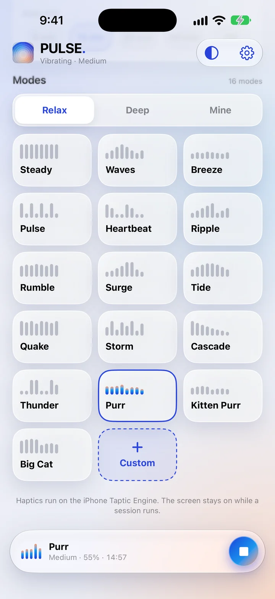
28 soothing rhythms for your neck, shoulders and back — powered by the Taptic Engine already in your pocket.
Free to download · iPhone · No account needed
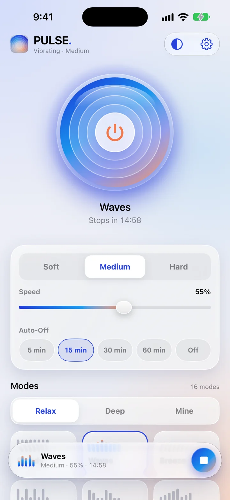
One big button, three intensities, and a rhythm for every mood.
Sixteen gentle modes in Relax, twelve stronger ones in Deep — from Breeze to Thunder.

Six stages that change the rhythm for you, in about seven minutes.
Choose how firm each beat feels.
Calmer or livelier, while it plays.
5, 15, 30 or 60 minutes, or no limit.
Shape the beat and the pause, test it, save it to Mine.

Follows your iPhone, or pick a look just for PULSE.
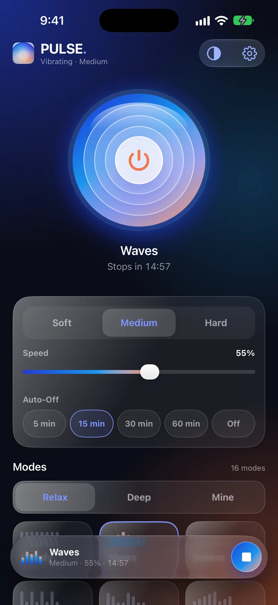
Dynamic Type and Reduce Motion support, with large, easy targets.
No account, no ads, no tracking. Your settings stay on your iPhone.
Every mode has its own beat and pause. Switch while it plays and feel the difference instantly — a gentle Breeze, a rolling Tide, a deep Rumble.
Start free with Steady, Waves, Breeze and Pulse. PULSE Pro unlocks all 28.
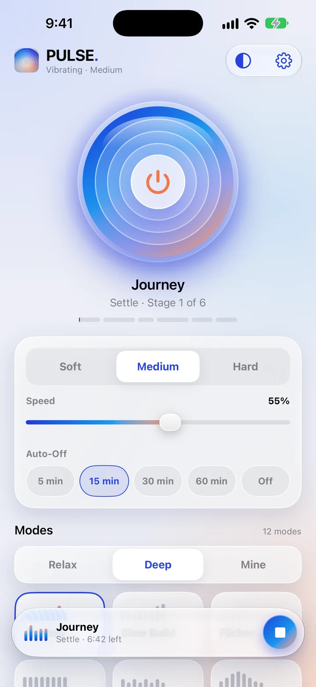
Not sure what to pick? Start the Journey. It eases in, builds, and settles back down on its own.
Choose Steady, Ramp, Double or Random, set the length of each vibration and pause, and test it before you save.
Read the guide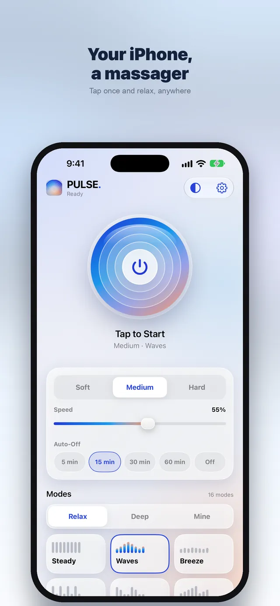
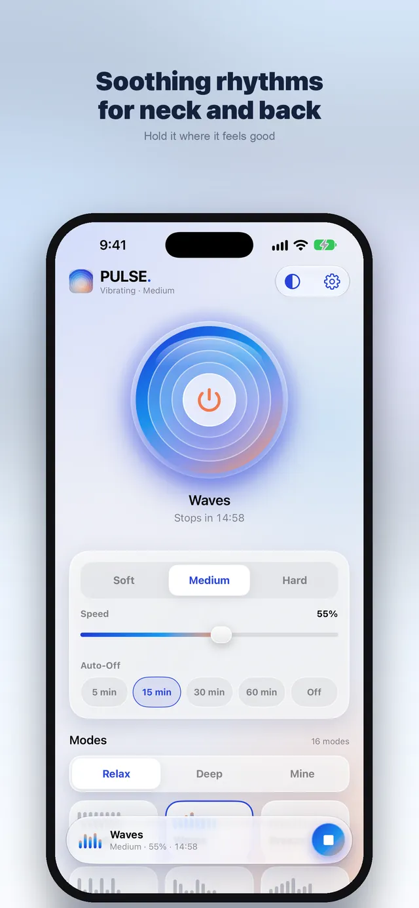
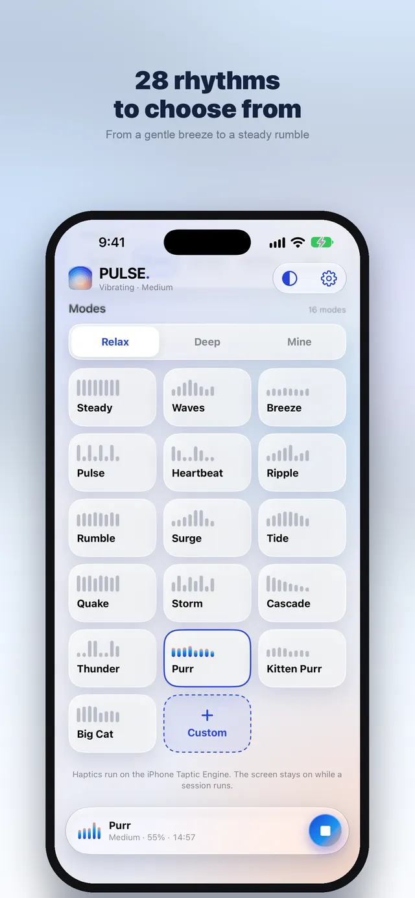
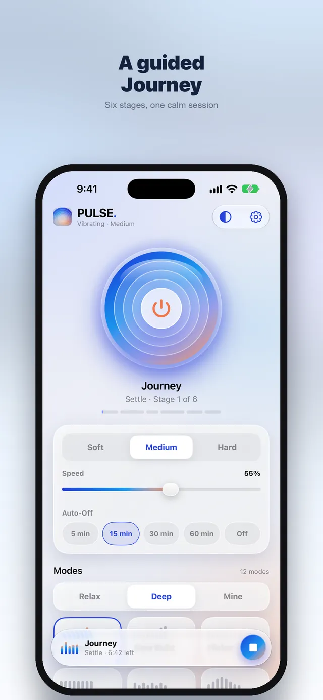
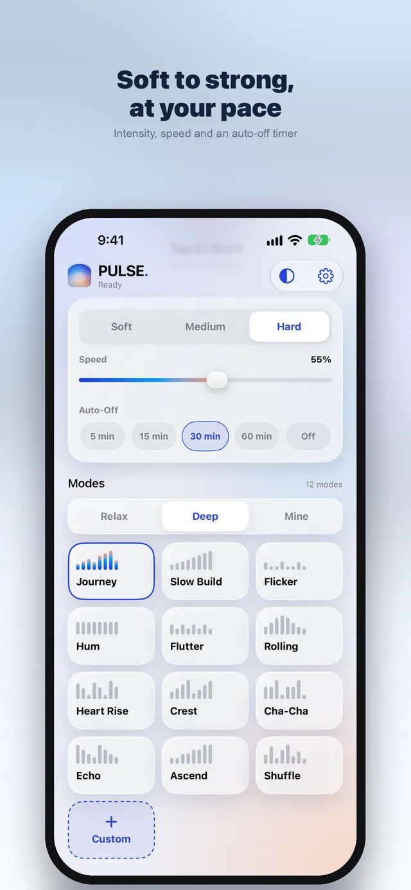
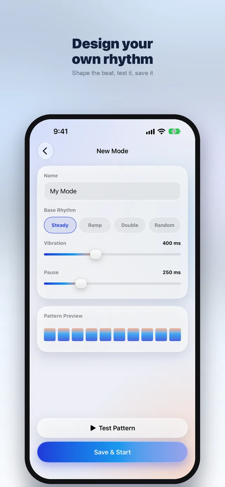
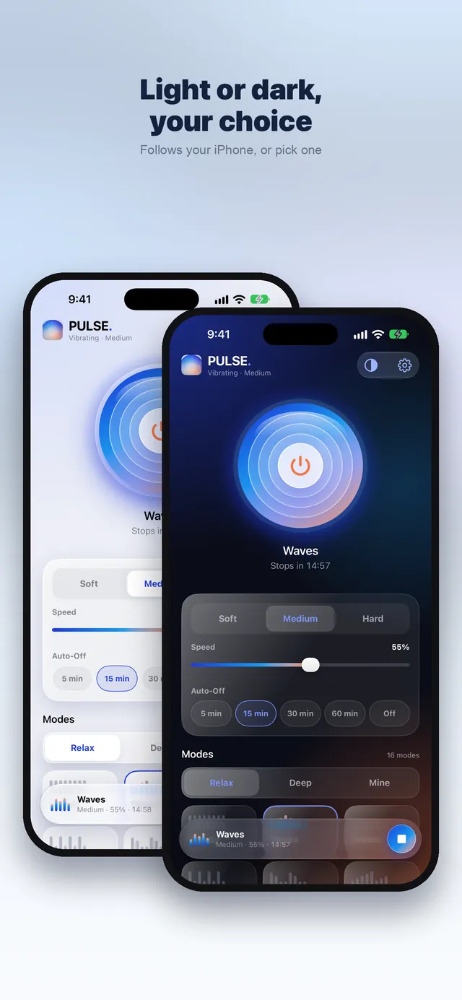
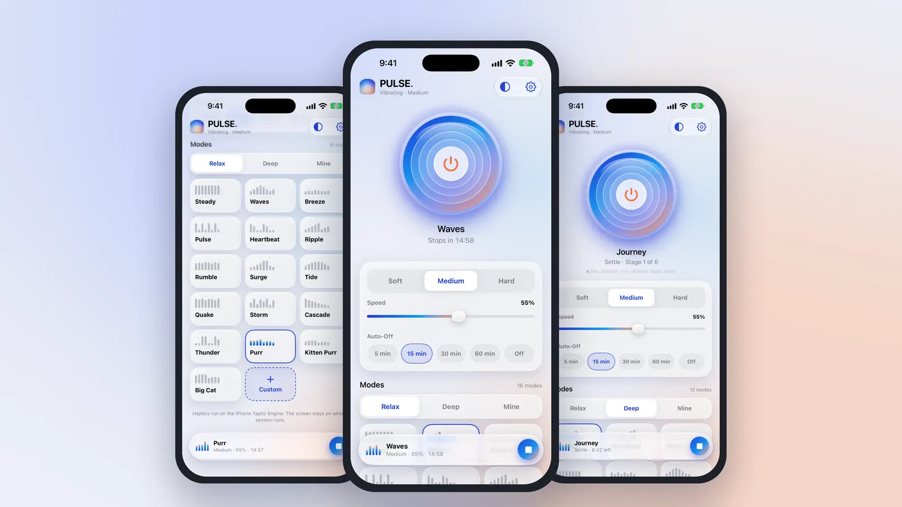
No account. No ads. No tracking. Our App Store privacy label is Data Not Collected.
Free includes 4 modes, Soft and Medium, and 5-minute sessions. Pro unlocks all 28 modes including Journey, Hard intensity, timers up to 60 minutes or no limit, and unlimited custom modes.
3-day free trial for eligible new subscribers.
Start Free TrialA full year of PULSE Pro, auto-renewing.
Get YearlyA one-time purchase that does not renew.
Get LifetimePayment is charged to your Apple Account when you confirm the purchase, or when the free trial ends. Subscriptions renew automatically unless cancelled at least 24 hours before the end of the current period; your account is charged for renewal within 24 hours before the period ends. You can manage or cancel a subscription in your iPhone's Settings › your name › Subscriptions. Any unused part of a free trial ends when you buy a subscription. Prices may vary by country and are always shown in the app before you buy. Refunds are handled by Apple. Family Sharing is not available for PULSE Pro. See the Terms of Use.
PULSE needs an iPhone with a Taptic Engine. Check that Settings › Sounds & Haptics › System Haptics is on. Low Power Mode can weaken haptics. The screen stays on during a session; vibration stops if you leave the app, because iOS doesn't allow haptics in the background.
Tap the big button to start. Pick Soft, Medium or Hard, set the speed and an auto-off timer, then choose a mode from Relax, Deep or Mine. Hold the iPhone against your neck, shoulders or back.
No. It's a relaxation app. Stop if anything feels uncomfortable, and ask a doctor first if you are pregnant, have an implanted device or a medical condition.
Free includes 4 modes (Steady, Waves, Breeze, Pulse), Soft and Medium intensity, and 5-minute sessions. Pro adds every mode including the guided Journey, Hard intensity, timers up to 60 minutes or no limit, and your own custom modes.
Weekly $2.99 (with a 3-day free trial for eligible new subscribers), Yearly $19.99, or Lifetime $29.99 once. Subscriptions renew automatically unless cancelled at least 24 hours before the period ends. Prices may vary by country.
Desk days and phone time pile tension into the same few muscles. Here are five easy habits for the evening, and where a gentle vibration fits in.
There's a tiny motor inside your iPhone built for precise taps. Here's how PULSE shapes it into 28 different massage rhythms.
Can't find the exact feel you want? The custom mode editor lets you shape the beat and the pause yourself. A step-by-step guide with three recipes to try.